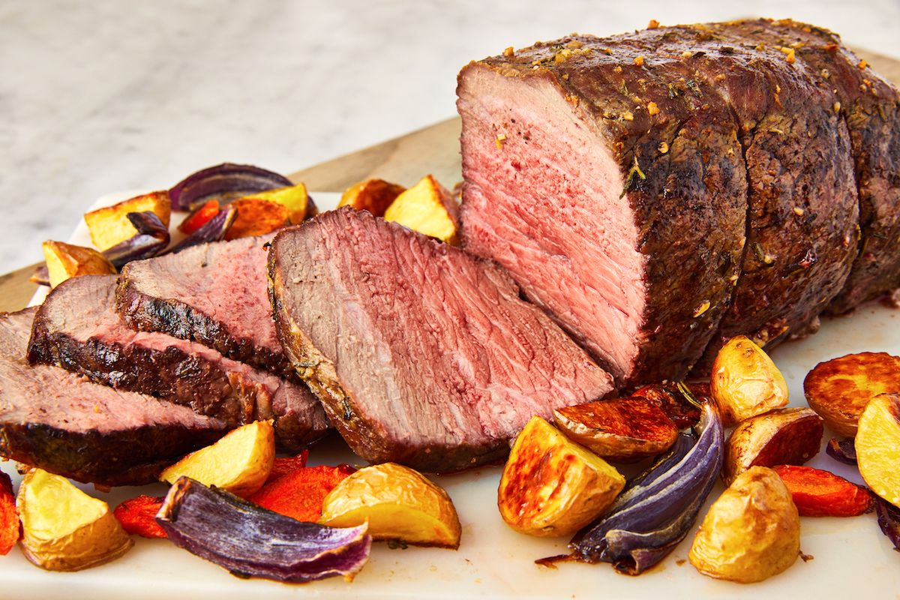

Roast Beef

Roast beef. A hearty Sunday dinner.
This Ch thties! Delic
Simple, healthy and easy to make. Prep Time 15 mins. Cook Time 12-18 mins.
Ingredients
-
950g beef top rump joint
-
1 tbsp mustard powder
-
1 onion, cut into 8 wedges
-
500g carrots cut lengthways
-
1 tbsp plain flour (for gravy)
-
250ml beef stock
Method
-
Heat oven to 240C/220C fan/gas 9.
-
Mix 1 tsp plain flour and 1 tsp mustard powder with some seasoning, then rub all over the 950g beef top rump joint.
-
Put 1 onion, cut into 8 wedges, and 500g carrots, halved lengthways, into a roasting tin and sit the beef on top, then cook for 20 mins.
-
Reduce oven to 190C/170C fan/gas 5 and continue to cook the beef for 30 mins if you like it rare, 40 mins for medium and 1 hr for well done.
-
Remove the beef and carrots from the oven, place onto warm plates or platters and cover with foil to keep warm.
-
Let the beef rest for 30 mins while you turn up the oven to cook your Yorkshire puds and finish the potatoes.
-
For the gravy, put the tin with all the meat juices and onions back onto the hob.
-
Stir in 1 tbsp plain flour, scraping all the stuck bits off the bottom of the tin. Cook for 30 seconds, then slowly stir in 250ml beef stock, little by little.
-
Bubble to a nice gravy, season, then serve with the beef, carved into slices, carrots and all the other trimmings.